What unit is used to measure resistance?
ohms, Ω
What is the symbol for a variable resistor?
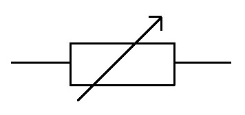
A circuit contains a resistor. If another resistor is added in series with the first, does the total resistance in the circuit increase, decrease or stay the same?
increase
When resistors are connected in series, how can you calculate the total resistance?
add the resistances together
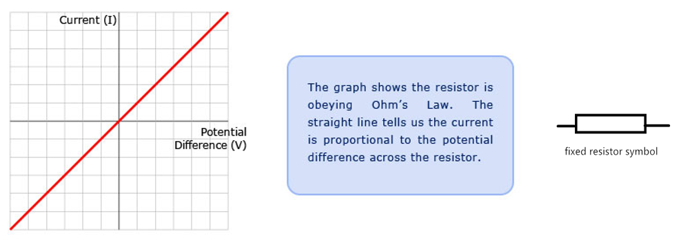
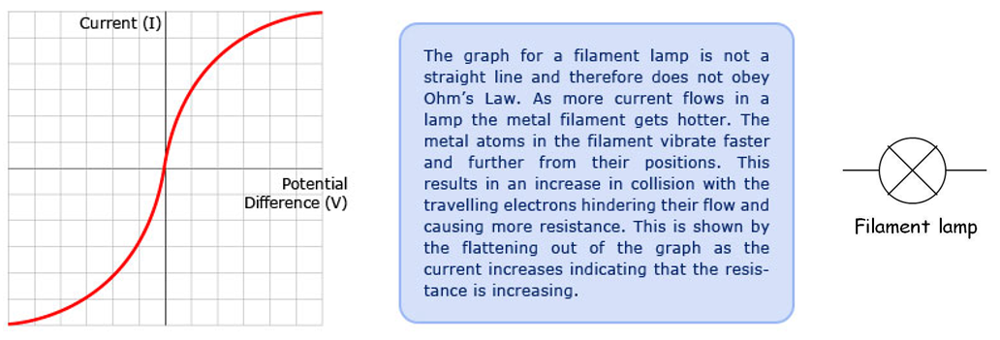
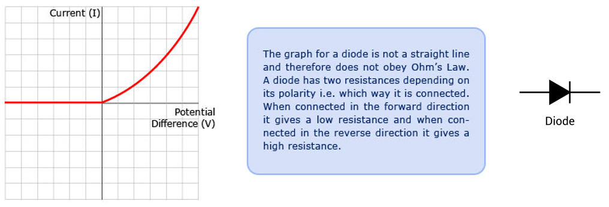
Draw a graph of current against potential difference for a fixed resistor.
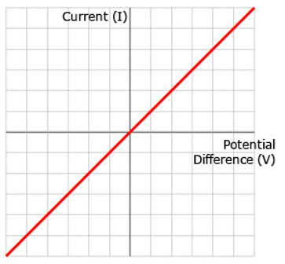
Describe the current–potential difference graph for a fixed resistor.
The graph is linear, showing that as the potential difference increases, the current also increases.
Describe the current–potential difference graph for a filament lamp.
The graph is curved and non-linear. As the potential difference increases, the current increases.
Describe the current–potential difference graph for a diode.
The graph is non-linear. In the forward direction, current only starts to flow when the potential difference reaches a certain value, after which the current increases rapidly.
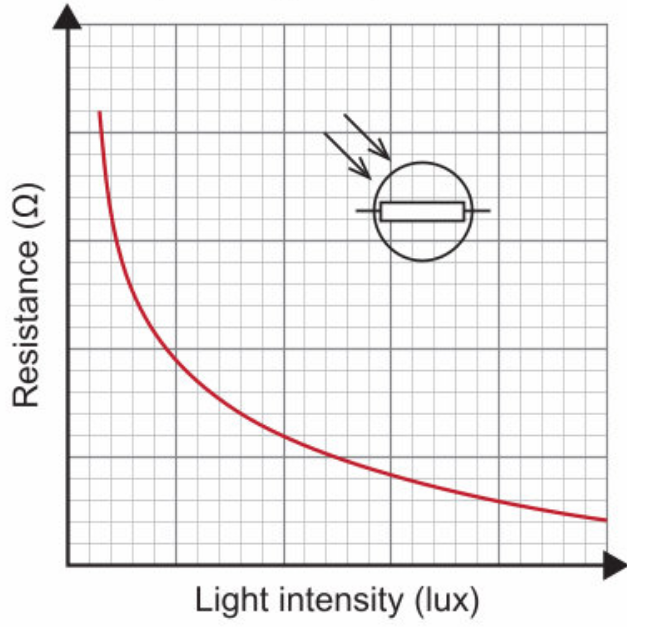
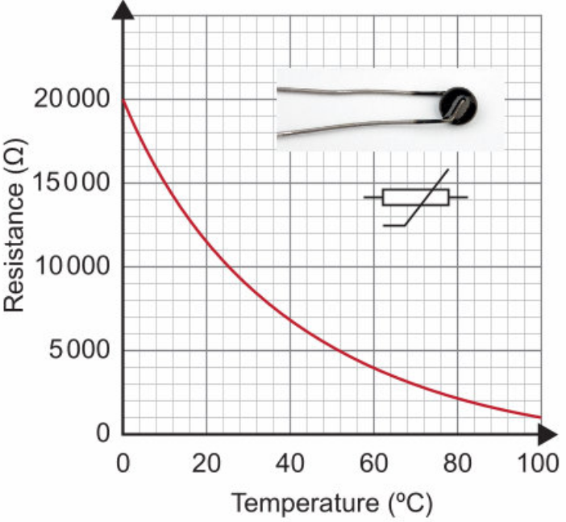
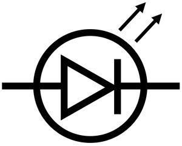
1.
- non-linear
- as the light intensity increases, the resistance decreases.
2.
- non-linear
- as the temperature increases, the resistance decreases.
3.
- linear
- as the potential difference increases, the current increases.
4.
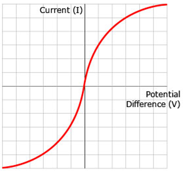
- non-linear
- as the potential difference increases, the current increases.
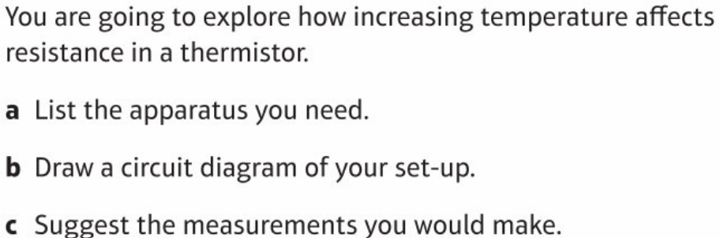
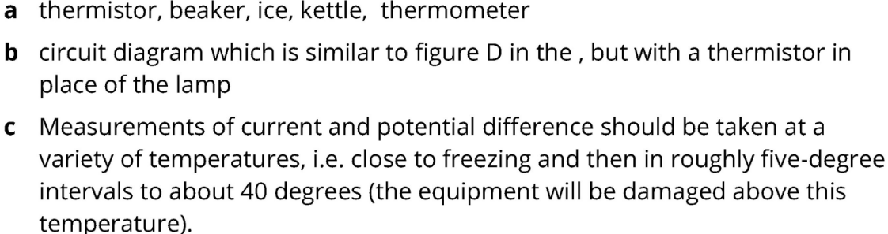
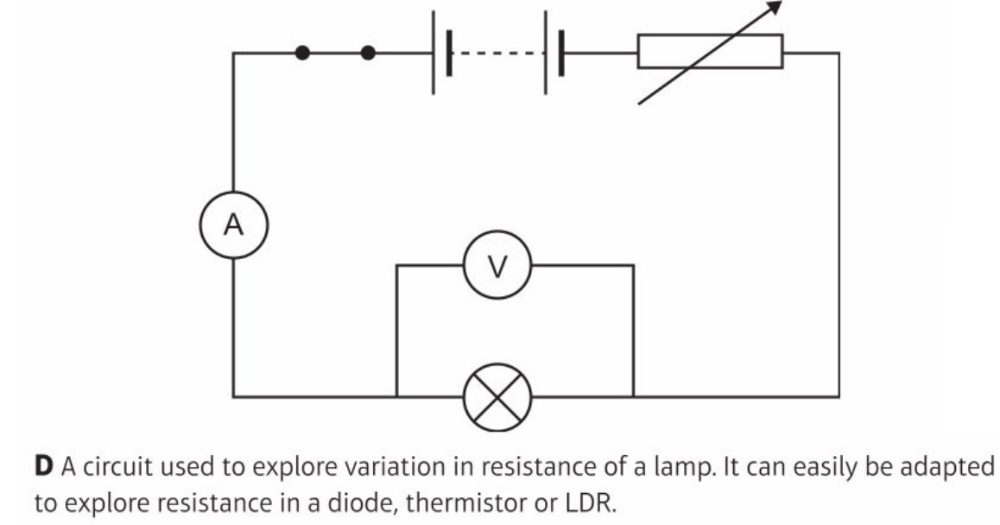